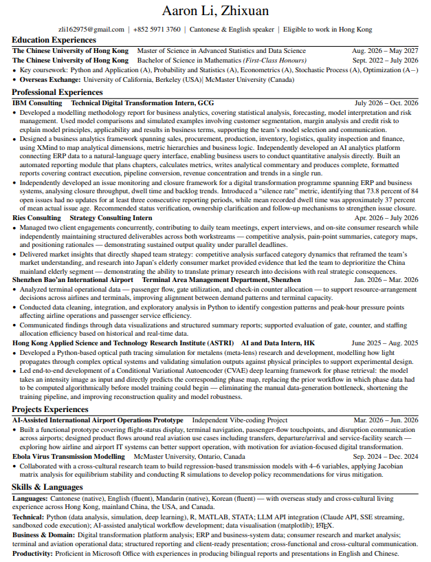

企業顧問、消費者洞察，以及可直接面向客戶的清晰敘事。
IBM
現職顧問
一等榮譽
學士學位
5
工作及實習經歷
4
精選項目
流利掌握四種語言
跨市場、跨文化高效溝通。
粵語
英語
韓語
國語
關於我
以嚴謹分析為基礎，從顧問視角解決問題。
我是一名具備數學、策略研究、應用人工智能及量化金融背景的顧問。 我最擅長從模糊問題出發，最終形成結構清晰、可直接支援決策的答案。
在顧問、科研機構與金融服務領域，我曾建立數據工作流程、研究市場、 自動化分析，並把技術發現轉化為清晰的商業敘事。
01 · 結構化問題
02 · 驗證證據
03 · 清晰傳達決策
教育背景
數學、數據科學與國際視野。
2022 — 2026
香港中文大學
數學理學士 · 一等榮譽
2026 — 2027
香港中文大學
高等科學與數據科學理學碩士
海外交流
加州大學柏克萊分校
麥克馬斯特大學

英文履歷
下載 PDF ↓
工作經歷
專業工作與實習經歷。
涵蓋顧問、應用研究、金融服務及機場營運；每項經歷均可進入完整案例頁。
精選項目
研究、建模與人工智能輔助原型。
獨立及大學項目，涵蓋流行病學、量化金融與航空數碼轉型。
履歷概覽
四個相互補足的專業領域。
四個領域共享同一種工作方式：結構化問題、驗證證據，並傳達切實可行的答案。
Python 模擬、CVAE 開發及人工智能輔助分析流程。
行業研究、資產定價、因子模型及投資組合分析。
航站樓數據、客流分析及航空數碼原型設計。
聯絡
一起把複雜問題，轉化為清晰的下一步。
zli162975@gmail.com ↗
香港 · 深圳 · 上海